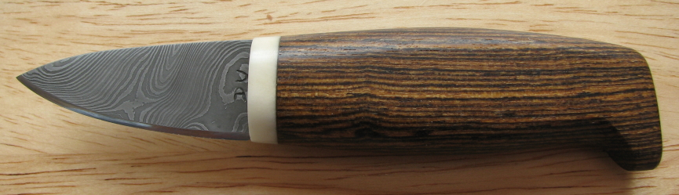
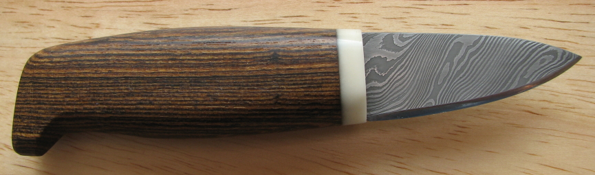
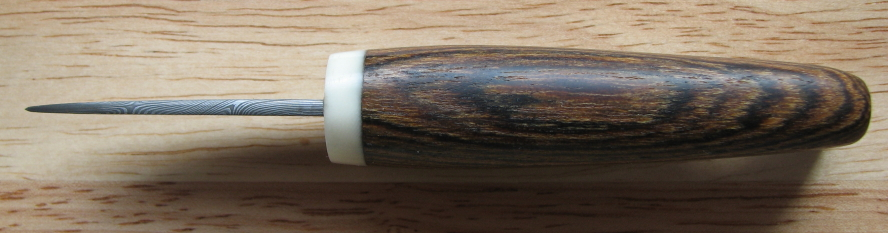
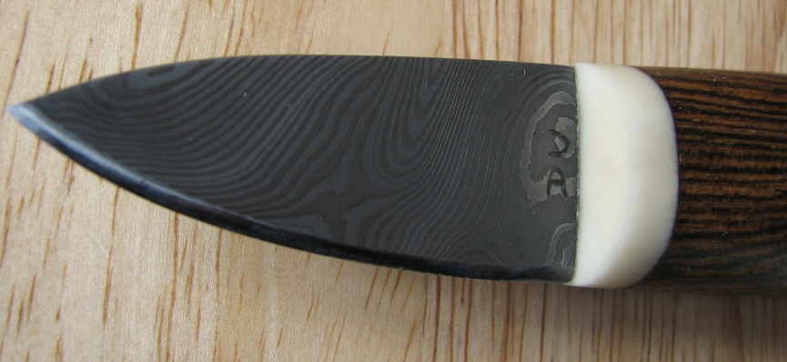
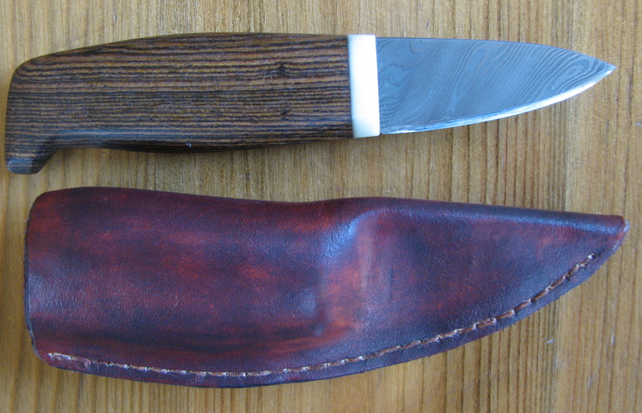

A two inch blade Scandinavian style knife
December 2007
This knife was finished in December 2007. I made it to go into another British Blades "Knives in the hat" which is due to finish early in January. There are nine people involved and we are making any style of knife, but the blade must be 2 inches long or less.
Some Scandinavian knives have a short blade relative to the handle, so I decided to make one of those, as it should be more useable.
The blade is a piece of 72 layer CS70 and 15n20 twisted and etched in ferric chloride. The handle is Mexican Rosewood, and the guard is made from Tagua nut. I was given a Tagua nut by P S Bonds from British Blades several years ago, and had wondered how to use it. It is also known as vegetable ivory, and is extremely hard with no obvious grain. It is a nice material, but unfortunately the nuts have a large void in the middle, and there is very little useable material from each nut.
  Here is the knife with the sheath finished:
